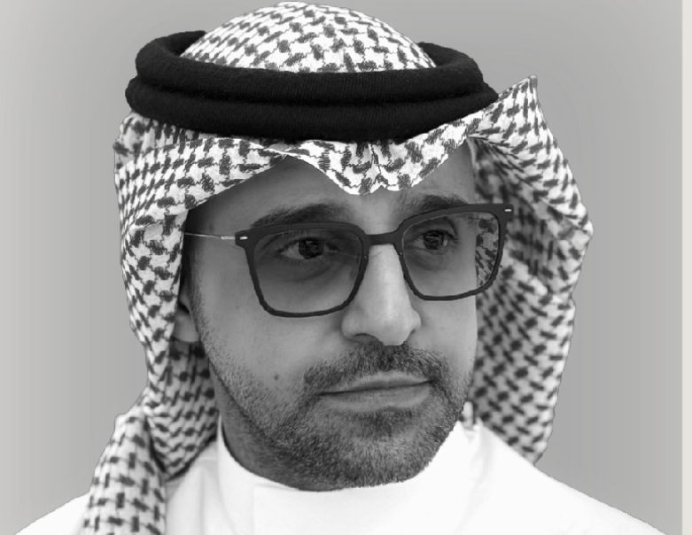
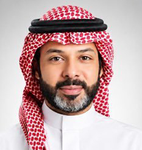
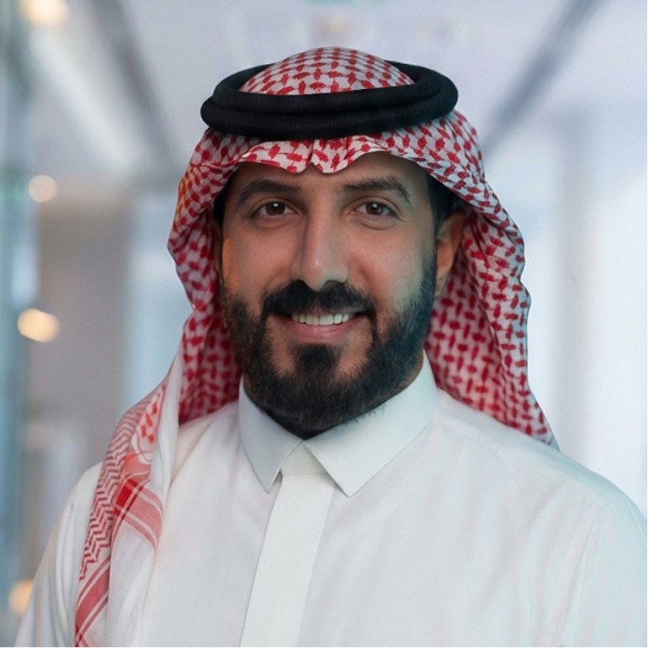

Strategic Direction
التوجيه الاستراتيجي
We frame ambition and decision-making around measurable outcomes and clear standards for success.
نؤطر الطموح والقرار حول نتائج قابلة للقياس ومعايير واضحة للنجاح.
We integrate strategy, marketing and communications, public relations, experience design, and creative production into one seamless ecosystem, creating new standards from the heart of the Kingdom to inspire the world.
ندمج الاستراتيجية والتسويق والاتصال والعلاقات العامة وصناعة التجارب والإنتاج الإبداعي في منظومة واحدة متكاملة، لنبتكر معايير جديدة تنطلق من قلب المملكة وتلهم العالم.
We frame ambition and decision-making around measurable outcomes and clear standards for success.
نؤطر الطموح والقرار حول نتائج قابلة للقياس ومعايير واضحة للنجاح.
We build vision on evidence, reading data, context and audiences before shaping the solution.
نبني الرؤية على الأدلة بقراءة البيانات والسياق والجمهور قبل صياغة الحل.
We unite disciplines, messages and experiences into one governed implementation path.
نوحد التخصصات والرسائل والتجارب في مسار تنفيذ واحد ومحكوم.
We follow implementation through to measurable impact and practical operational readiness.
نتابع التنفيذ حتى الأثر القابل للقياس والجاهزية التشغيلية الفعلية.



Strategic thinking intersects with creative solutions from day one, making creativity an authentic partner in planning and decision-making.
يتقاطع الفكر الاستراتيجي مع الحلول الإبداعية منذ اللحظة الأولى، ليصبح الإبداع شريكاً أصيلاً في التخطيط وصناعة القرار.
Framing ambition and decision-making around rigorous success metrics.
نؤطر الطموح والقرار ضمن معايير صارمة وواضحة للنجاح.
Building vision on evidence through data, context and audience understanding.
نبني الرؤية على الأدلة عبر فهم البيانات والسياق والجمهور.
Designing solutions and uniting expertise into governed execution pathways.
نصمم الحل ونوحد الخبرات في مسارات تنفيذ واضحة الحوكمة.
Managing implementation and impact until the vision is fully realised.
ندير التنفيذ والأثر حتى اكتمال الرؤية وتحولها إلى واقع.
Translating Saudi identity and Vision 2030 objectives into sustainable value.
نترجم الهوية السعودية ومستهدفات رؤية 2030 إلى قيمة مستدامة.
Balancing uncompromising global standards with local ambition.
نوازن بين المعايير العالمية الصارمة والطموح المحلي.